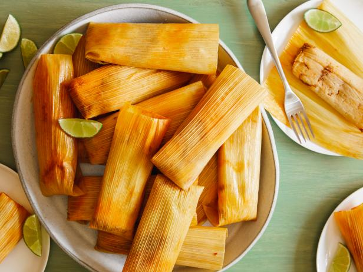

Chicken Tamales with Chile Verde
One of the most well-liked tamales offered over the holidays in Mexican and Mexican American families like mine,
particularly on Christmas Eve, is chile verde or green chile chicken. The traditional accompaniments to the tamales are
rice, beans, crema to cool the heat, and a warm mug of rich champurrado. It's a traditional Christmas supper!

Ingredients
- Corn husks, 1 (8-ounce) package (see Recipe Note)
- 2 1/2 pounds boneless, skinless chicken breasts
- 1 medium white onion, divided into halves after peeling
- ten cups of water
- 3 teaspoons salt, divided
- 1 1/2 pounds tomatillos, husk removed, rinsed, and roughly chopped
- 7 serrano peppers, stems cut off, roughly sliced (see Recipe Note)
- 1 jalapeno peppers, stems removed and roughly chopped (see Recipe Note)
- 3 cloves garlic, peeled
- Small bunch cilantro (about 1 1/2 cups tightly packed)
- 6 cups masa for tamales (see Recipe Note)
For Serving
- Sour cream or crema
- Crumbled Cotija cheese
- roughly chopped cilantro
Method of Cook
- Prepare the tamales.
- Get the steamer ready.
- Build the tamales.
- Make the chile verde.
- Prepare the chicken.
NUTRITION FACTS(PER SERVING)
408
CALORIES
6g
FAT
53g
CARBS
36g
PROTEIN